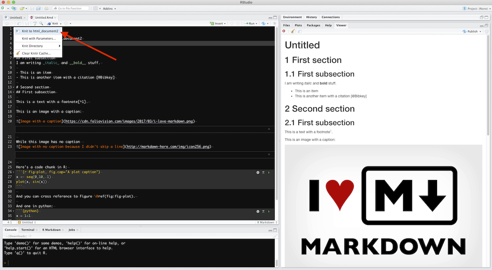

#> [1] 214 Writing documents with Rmarkdown
14.1 What is markdown?
Markdown is a simplified language that can be used to produce a variety of rich documents: a single .md file can be compiled and outputted to .docx, .odt, .html, .rtf, .pdf or .tex. This output format as well as various options (font size, template, table of contents, numbered sections…) are specified in a YAML header, i.e. text between two lines like that --- (we’ll see an example later).
In markdown can be embedded \(\LaTeX\) code for displaying math expressions, html tags for more complicated html stuff, and the rest of the formatting is given by a few easy commands:
# Title
## sub-title
### sub-sub-title
...
###### sub_6-title
**bold**
*italic*
[link](http://google.com/)

Table:
| | |
|---|---|
| | |
Unordered list:
- bla
- bla bla
Ordered list:
1. bla
1. bla bla
LaTeX code: $\int_{-\infty}^{\infty} e^{-x^2}=\sqrt{\pi}$
HTML code: <a href="some_link">text</a>You can also add in-line code by writing text between back-ticks:
Text with `in-line code`will render as: Text with in-line code
For more commands, you can for example get a digested cheat-sheet here and a tutorial here.
14.2 … and Rmarkdown?
Rmarkdown is basically the same thing as markdown (extension: .Rmd instead of .md), with the difference that code chunks in which you specify the language between accolades will be computed and the result will be displayed.
```r
# Not computed
1+1
``````{r}
# Computed
1+1
```And in-line code can be computed and rendered:
In-line code `r 1+2`will render as: In-line code 3.
This very webpage is fully written in Rmarkdown (see the “View book source” at the bottom of the left sidebar).
Rmarkdown supports a number of languages:
names(knitr::knit_engines$get())#> [1] "awk" "bash" "coffee" "gawk" "groovy" "haskell"
#> [7] "lein" "mysql" "node" "octave" "perl" "php"
#> [13] "psql" "Rscript" "ruby" "sas" "scala" "sed"
#> [19] "sh" "stata" "zsh" "asis" "asy" "block"
#> [25] "block2" "bslib" "c" "cat" "cc" "comment"
#> [31] "css" "ditaa" "dot" "embed" "eviews" "exec"
#> [37] "fortran" "fortran95" "go" "highlight" "js" "julia"
#> [43] "python" "R" "Rcpp" "sass" "scss" "sql"
#> [49] "stan" "targets" "tikz" "verbatim" "ojs" "mermaid"
#> [55] "include"And python and R code chunks can communicate thanks to the reticulate package.
So… are you starting to see the power of this tool…?
Basically, you can use the best language for each task and combine it in a single Rmd file that will display text and images that are computed at each compilation of the Rmd file: you can fully automatize your data treatment and reporting.
Example:
- chunk 1: bash, call a program that creates some files
- chunk 2: python, call a program that do some big computation on these files
- chunk 3: R, do some data treatment, plot the data
14.3 Further readings and ressources
There are numerous ressources out there to help you on your Rmarkdown journey:
- Rmarkdown cheatsheet
- Code chunks
- Languages
- The Rmarkdown gallery: to help you chose between formats and templates, with example codes
- The Rmarkdown cookbook: just go there when you have a question about Rmarkdown.
- The Rmarkdown definitive guide: ibidem.
- flexdashboard: a package to make dashboards
- rticles: a package with a collection of pdf templates for scientific articles
- rmdformats: a package with a collection of html templates
- stevetemplates: a collection of pdf templates by Steve Miller
- Rexams: a package to help define exams with included/hidden solution
- Thesisdown: a package to help you write your thesis with Rmarkdown
- vitae: a package to help you write your CV using Rmarkdown, with helpful functions to add content to the documents.
I also provide a collection of examples on the github repo of this class:
- HTML outputs:
- PDF outputs:
- Microsoft Office outputs:
14.4 Example
Download biblio.bib and nature.csl and put them at the root of your project.
Create an example.Rmd file with the following YAML header (the indentation is important):
---
title : Your Title
author : John Doe
date : `r format(Sys.time(), '%d/%m/%Y')`
output :
html_document:
toc : true
toc_float : true
highlight : tango
number_sections: false
code_folding : hide
bibliography: "biblio.bib"
csl : "nature.csl"
---How to understand this header:
-
---: surrounds the YAML header. The body comes after that. -
title,authoranddate: easy. The date can automatically be set to the current one by setting it to:
`r format(Sys.time(), '%d/%m/%Y')`-
output: this tells pandoc the output format you want. When compiling, in case there are multiple entries, the compiler will only look to the first one. Click the links below to see more options.- In this case, the output will be an html document with a floating table of contents, unnumbered sections and all code chunks will be hidden with a button to allow showing them.
- Other output formats allowed:
- Useful options:
- Word document: you can supply a reference style (template) to use. Just write a dummy .docx file in which you edit the style, save it as
word-template.docx(for example), and set the optionreference_docx: word-template.docx. - LaTeX:
keep_tex: when pandoc compiles your markdown file to a PDF, it goes through the intermediate step of creating a .tex file. You can decide to keep it for tweaking the style of the PDF output, like you would normally do with a .tex file. -
fig_caption: allows for figure caption. -
toc: creates a table of contents. -
number_sections: allows for section numbering. -
highlight: syntax highlighting theme for the code chunks.
- Word document: you can supply a reference style (template) to use. Just write a dummy .docx file in which you edit the style, save it as
-
bibliography: path to your .bib file. To create a bibliography, add a# Referencesheader at the end of your document. -
csl: path to the bibliography style for the output – in this example, nature.csl. Find your style or edit your own. - There are many other options, but with this you’ll fulfill most of your needs.
Now you can start adding some content, like:
---
title: "The title"
output:
bookdown::html_document2: #instead of html_document, for referencing images
toc : true
toc_float : true
highlight : tango
number_sections: true
code_folding : show
code_download : true
# bookdown::pdf_document2 #instead of pdf_document, for referencing images
bibliography: "biblio.bib"
csl : "nature.csl"
---
# First section
## First subsection
I am writing _italic_ and __bold__ stuff.
- This is an item
- Another one with citations [@bevan_statistical_2013;@rcoreteam_language_2017]
# Second section
## First subsection that I want to refer to {#subsectionID}
This is a text with a footnote[^1].
Now I can refer to my subsection using `\@ref(subsectionID)` like so:
section \@ref(subsectionID).
This is an image with a caption:
```{r CHUNKname, echo=FALSE, fig.cap="This is a very nice caption", out.width="50%", fig.align='center'}
knitr::include_graphics("https://cdn.foliovision.com/images/2017/03/i-love-markdown.png")
```
And I can refer to this figure using `\@ref(fig:CHUNKname)`.
Example : Figure \@ref(fig:CHUNKname).
Here is a code chunk in R in Fig. \@ref(fig:Rfigure):
```{r Rfigure, fig.cap="Test figure in R", fig.align='center'}
x <- seq(0,10,.1)
plot(x, sin(x), main="R plot")
```
And one in python in Fig. \@ref(fig:Pythonfigure):
```{python Pythonfigure, fig.cap="Test figure in python", fig.align='center'}
# Load some libraries
import numpy as np
# Matplotlib non interactive plots
import matplotlib.pyplot as plt
N = 100
x = np.linspace(0,10,N)
plt.plot(x, np.sin(x))
plt.title("Matplotlib Plot")
plt.ylabel("Y values")
plt.xlabel("X values")
plt.show()
```
# References
[^1]: This is a footnote.Note that when you choose to output to an html format, you can’t use PDF images: use .svg (pdf2svg) or other non vectorial images.
What’s nice with html output, it’s that you can include interactive figures with plotly like we saw in the previous sections. Of course, this won’t work with static documents like PDF or Word…
For cross referencing to figures and tables, use output: bookdown::html_document2 instead of output: html_document (requires the package bookdown), and see here for details.
14.5 Code chunks options
You can add options to a code chunk, like:
-
echo=FALSE: hide the code, show the output -
include=FALSE: hide the code and the output -
warnings=FALSE: hide the warning messages -
error=TRUE: will compute the code chunk despite errors -
cache=TRUE: cache the result of the chunk for faster re-compilation -
fig.asp: figure aspect ratio -
fig.caption: figure caption - …and more
14.6 Compilation
To knit your Rmd file to the desired output, in Rstudio, click the little triangle next to the “Knit” button, like this:

The corresponding output file will be created in the same folder.
14.7 Going further: parameters
You can even provide a list of parameters to your Rmarkdown file that you can retrieve in code chunks with params$param_name. More information here, but here is a short example: try compiling it directly using the “Knit” button, and then try compiling it using “Knit with parameters”. Alternatively, you can have the popup interactive window by rendering with the command rmarkdown::render("MyDocument.Rmd", params = "ask").
---
title: "Test"
output: html_document
params:
city:
label: "City:"
value: Angers
input: select
multiple: TRUE
choices: [Angers, Paris, Montpellier, Nantes, Marseille]
printcode:
label: "Display Code"
value: TRUE
data:
label: "Input dataset:"
value: "Data/population.txt"
input: file
---
```{r, setup, include=FALSE}
# set this option in the first code chunk in the document
knitr::opts_chunk$set(echo = params$printcode)
```
Plotting `r paste(params$data)`:
```{r, message=FALSE}
library(ggplot2)
library(plotly)
df <- read.table(params$data, header=TRUE)
p <- ggplot(data=subset(df, city %in% params$city),
aes(x=year, y=pop, size=pop, color=city)) +
geom_point() +
geom_smooth(method="lm", aes(fill=city), alpha=0.1, show.legend = FALSE) +
ggtitle(paste("Population in ",paste(params$city, collapse=", "),sep=""))+
labs(x="Year", y="Population")+
theme_light()
ggplotly(p)
```The “Knit with parameters” launches a Shiny user interface allowing interactively choosing the parameters. All options are listed here.
14.8 And what about JuPyteR notebooks?
JuPyteR notebooks are basically a web-based interactive version or Rmarkdown documents working with Julia, Python and R.
But the installation is a tad complicated for the non initiate, and, well, it is just like Rmarkdown but less easy to use and share, in my opinion. But if you mostly work with python, then you have to get used to it since Rmarkdown is better suited for R.
14.9 Welcome to the future: Quarto
Quarto is a standalone project from the Rstudio team built on pandoc that lookis a lot like Rmarkdown, but tailored not only for R but also for python, julia and observable.
All your Rmd files should be directly compatible with quarto upon changing the extension name to qmd. Then I invite you to explore the new possibilities offerd by quarto.
14.10 Exercise
Exercise 1
- Create a new R Markdown file (.Rmd) in RStudio.
- Insert a YAML Header with title, author and date of your choice at the top of your .Rmd script. Make it so that the output is an html document.
- Display the summary of “cars” dataset in your report.
- Make a plot of the “cars” dataset under the summary you just created.
- Create a small experimental dataframe and display it in your report.
- Hide the code from your the last code chunk (HINT: Use echo.)
- Hide the code from all code chunks with the possibility to show it (HINT: use code_folding).
- Load the package “knitr” in your .Rmd file. and hide the code chunk. HINT: Use include.
- Hide the warning message that appeared in your report. HINT: Use warning.
- Set fig.width and fig.height of your plot to 5.
- Output the same report as pdf.
Exercise 2
Create an html experimental logbook doing all the data treatment in the example in the previous section.
Exercise 3
Create an html experimental logbook doing all the data treatment in the example in the previous section for a single experimental file that you will provide as a parameter in the YAML header. The file path must be given as an interactive file input selection.